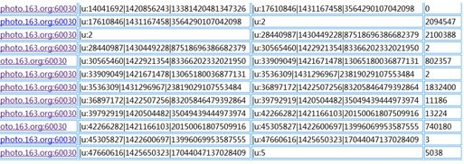
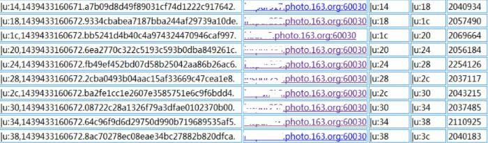
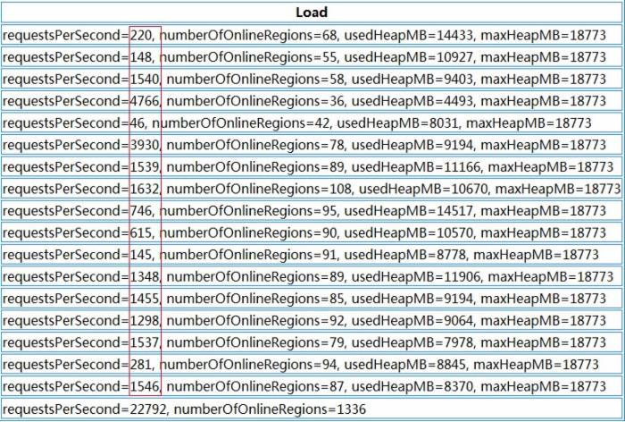
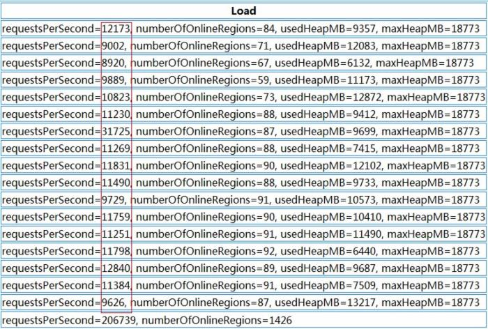
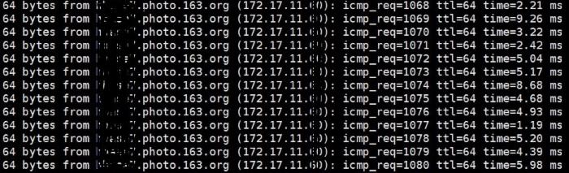
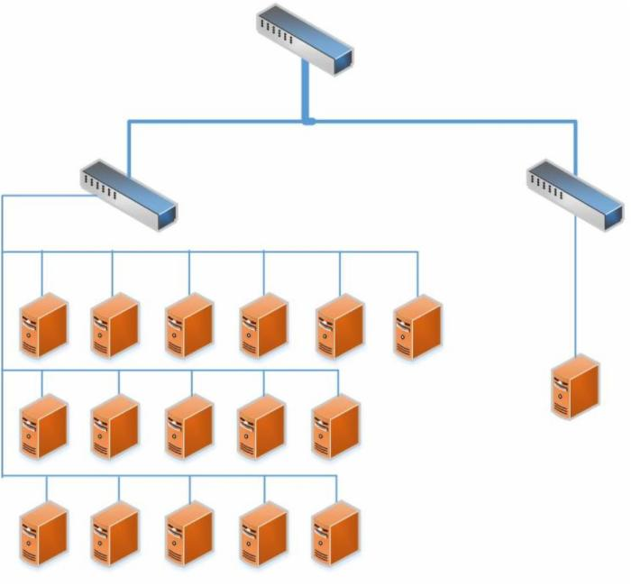
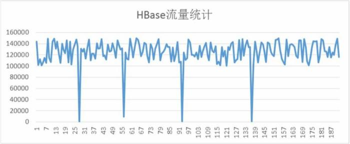

HBase优化实战
背景
Datastream一直以来在使用HBase分流日志，每天的数据量很大，日均大概在80亿条，10TB的数据。对于像Datastream这种数据量巨大、对写入要求非常高，并且没有复杂查询需求的日志系统来说，选用HBase作为其数据存储平台，无疑是一个非常不错的选择。
HBase是一个相对较复杂的分布式系统，并发写入的性能非常高。然而，分布式系统从结构上来讲，也相对较复杂，模块繁多，各个模块之间也很容易出现一些问题，所以对像HBase这样的大型分布式系统来说，优化系统运行，及时解决系统运行过程中出现的问题也变得至关重要。正所谓：“你”若安好，便是晴天；“你”若有恙，我便没有星期天。
历史现状
HBase交接到我们团队手上时，已经在线上运行有一大段时间了，期间也偶尔听到过系统不稳定的、时常会出现一些问题的言论，但我们认为：一个能被大型互联网公司广泛采用的系统(包括Facebook，twitter，淘宝，小米等)，其在性能和可用性上是毋庸置疑的，何况像Facebook这种公司，是在经过严格选型后，放弃了自己开发的Cassandra系统，用HBase取而代之。既然这样，那么，HBase的不稳定、经常出问题一定有些其他的原因，我们所要做的，就是找出这些HBase的不稳定因素，还HBase一个“清白”。“查案”之前，先来简单回顾一下我们接手HBase时的现状(我们运维着好几个HBase集群，这里主要介绍问题最多那个集群的调优)：
| 名称 | 数量 | 备注 |
| 服务器数量 | 17 | 配置不同，HBase、HDFS都部署在这些机器上 |
| 表数量 | 30+ | 只有部分表的数据量比较大，其他基本没多少数据 |
| Region 数量 | 600+ | 基本上都是数据量较大的表划分的region较多 |
| 请求量 | 50000+ | 服务器请求分布极其不均匀 |
应用反应经常会过段时间出现数据写入缓慢，导致应用端数据堆积现象，是否可以通过增加机器数量来解决？
其实，那个时候，我们本身对HBase也不是很熟悉，对HBase的了解，也仅仅在做过一些测试，了解一些性能，对内部结构，实现原理之类的基本上都不怎么清楚。于是刚开始几天，各种问题，每天晚上拉着一男一起摸索，顺利的时候，晚上8，9点就可以暂时搞定线上问题，更多的时候基本要到22点甚至更晚(可能那个时候流量也下去了)，通过不断的摸索，慢慢了解HBase在使用上的一些限制，也就能逐渐解决这一系列过程中发现的问题。后面挑几个相对比较重要，效果较为明显的改进点，做下简单介绍。
调优
首先根据目前17台机器，50000+的QPS，并且观察磁盘的I/O利用率和CPU利用率都相当低来判断：当前的请求数量根本没有达到系统的性能瓶颈，不需要新增机器来提高性能。如果不是硬件资源问题，那么性能的瓶颈究竟是什么？
Rowkey设计问题
现象
打开HBase的Web端，发现HBase下面各个RegionServer的请求数量非常不均匀，第一个想到的就是HBase的热点问题，具体到某个具体表上的请求分布如下：

HBase表请求分布
上面是HBase下某张表的region请求分布情况，从中我们明显可以看到，部分region的请求数量为0，而部分的请求数量可以上百万，这是一个典型的热点问题。
原因
HBase出现热点问题的主要原因无非就是rowkey设计的合理性，像上面这种问题，如果rowkey设计得不好，很容易出现，比如：用时间戳生成rowkey，由于时间戳在一段时间内都是连续的，导致在不同的时间段，访问都集中在几个RegionServer上，从而造成热点问题。
解决
知道了问题的原因，对症下药即可，联系应用修改rowkey规则，使rowkey数据随机均匀分布，效果如下：

Rowkey重定义后请求分布
建议
对于HBase来说，rowkey的范围划定了RegionServer，每一段rowkey区间对应一个RegionServer，我们要保证每段时间内的rowkey访问都是均匀的，所以我们在设计的时候，尽量要以hash或者md5等开头来组织rowkey。
Region重分布
现象
HBase的集群是在不断扩展的，分布式系统的最大好处除了性能外，不停服横向扩展也是其中之一，扩展过程中有一个问题：每次扩展的机器的配置是不一样的，一般，后面新加入的机器性能会比老的机器好，但是后面加入的机器经常被分配很少的region，这样就造成了资源分布不均匀，随之而来的就是性能上的损失，如下：

HBase各个RegionServer请求
上图中我们可以看到，每台RegionServer上的请求极为不均匀，多的好几千，少的只有几十
原因
资源分配不均匀，造成部分机器压力较大，部分机器负载较低，并且部分Region过大过热，导致请求相对较集中。
解决
迁移部分老的RegionServer上的region到新加入的机器上，使每个RegionServer的负载均匀。通过split切分部分较大region，均匀分布热点region到各个RegionServer上。

HBase region请求分布
对比前后两张截图我们可以看到，Region总数量从1336增加到了1426，而增加的这90个region就是通过split切分大的region得到的。而对region重新分布后，整个HBase的性能有了大幅度提高。
建议
Region迁移的时候不能简单开启自动balance，因为balance主要的问题是不会根据表来进行balance，HBase的自动balance只会根据每个RegionServer上的Region数量来进行balance，所以自动balance可能会造成同张表的region会被集中迁移到同一个台RegionServer上，这样就达不到分布式的效果。
基本上，新增RegionServer后的region调整，可以手工进行，尽量使表的Region都平均分配到各个RegionServer上，另外一点，新增的RegionServer机器，配置最好与前面的一致，否则资源无法更好利用。
对于过大，过热的region，可以通过切分的方法生成多个小region后均匀分布(注意：region切分会触发major compact操作，会带来较大的I/O请求，请务必在业务低峰期进行)
HDFS写入超时
现象
HBase写入缓慢，查看HBase日志，经常有慢日志如下：
WARN org.apache.hadoop.ipc.HBaseServer- (responseTooSlow): {“processingtimems”:36096, “call”:”multi(org.apache.hadoop.hbase.client.MultiAction@7884377e), rpc version=1, client version=29, methodsFingerPrint=1891768260″, “client”:”xxxx.xxx.xxx.xxxx:44367″, “starttimems”:1440239670790, “queuetimems”:42081, “class”:”HRegionServer”, “responsesize”:0, “method”:”multi”}
并且伴有HDFS创建block异常如下：
INFO org.apache.hadoop.hdfs.DFSClient – Exception in createBlockOutputStream
org.apache.hadoop.hdfs.protocol.HdfsProtoUtil.vintPrefixed(HdfsProtoUtil.java:171)
org.apache.hadoop.hdfs.DFSOutputStream$DataStreamer.createBlockOutputStream(DFSOutputStream.java:1105)
org.apache.hadoop.hdfs.DFSOutputStream$DataStreamer.nextBlockOutputStream(DFSOutputStream.java:1039)
org.apache.hadoop.hdfs.DFSOutputStream$DataStreamer.run(DFSOutputStream.java:487)
一般地，HBase客户端的写入到RegionServer下某个region的memstore后就返回，除了网络外，其他都是内存操作，应该不会有长达30多秒的延迟，外加HDFS层抛出的异常，我们怀疑很可能跟底层数据存储有关。
原因
定位到可能是HDFS层出现了问题，那就先从底层开始排查，发现该台机器上10块盘的空间利用率都已经达到100%。按理说，作为一个成熟的分布式文件系统，对于部分数据盘满的情况，应该有其应对措施。的确，HDFS本身可以设置数据盘预留空间，如果部分数据盘的预留空间小于该值时，HDFS会自动把数据写入到另外的空盘上面，那么我们这个又是什么情况？
最终通过多方面的沟通确认，发现了主要原因：我们这批机器，在上线前SA已经经过处理，每块盘默认预留100G空间，所以当通过df命令查看盘使用率为100%时，其实盘还有100G的预留空间，而HDFS层面我们配置的预留空间是50G，那么问题就来了：HDFS认为盘还有100G空间，并且多于50G的预留，所以数据可以写入本地盘，但是系统层面却禁止了该写入操作，从而导致数据写入异常。
解决
解决的方法可以让SA释放些空间出来便于数据写入。当然，最直接有效的就是把HDFS的预留空间调整至100G以上，我们也正是这样做的，通过调整后，异常不再出现，HBase层面的slow log也没有再出现。同时我们也开启了HDFS层面的balance，使数据自动在各个服务器之间保持平衡。
建议
磁盘满了导致的问题很难预料，HDFS可能会导致部分数据写入异常，MySQL可能会出现直接宕机等等，所以最好的办法就是：不要使盘的利用率达到100%。
网络拓扑
现象
通过rowkey调整，HDFS数据balance等操作后，HBase的确稳定了许多，在很长一段时间都没有出现写入缓慢问题，整体的性能也上涨了很多。但时常会隔一段时间出现些slow log，虽然对整体的性能影响不大，但性能上的抖动还是很明显。
原因
由于该问题不经常出现，对系统的诊断带来不小的麻烦，排查了HBase层和HDFS层，几乎一无所获，因为在大多数情况下，系统的吞吐量都是正常的。通过脚本收集RegionServer所在服务器的系统资源信息，也看不出问题所在，最后怀疑到系统的物理拓扑上，HBase集群的最大特点是数据量巨大，在做一些操作时，很容易把物理机的千兆网卡都吃满，这样如果网络拓扑结构存在问题，HBase的所有机器没有部署在同一个交换机上，上层交换机的进出口流量也有可能存在瓶颈。网络测试还是挺简单的，直接ping就可以，我们得到以下结果：共17台机器，只有其中一台的延迟存在问题，如下：

网络延迟测试：Ping结果
同一个局域网内的机器，延迟达到了毫秒级别，这个延迟是比较致命的，因为分布式存储系统HDFS本身对网络有要求，HDFS默认3副本存在不同的机器上，如果其中某台机器的网络存在问题，这样就会影响到该机器上保存副本的写入，拖慢整个HDFS的写入速度。
解决
网络问题，联系机房解决，机房的反馈也验证了我们的想法：由于HBase的机器后面进行了扩展，后面加入的机器有一台跟其他机器不在同一个交换机下，而这台机器正是我们找出的有较大ping延时这台，整个HBase物理结构如下：

HBase物理拓扑结构
跟机房协调，调整机器位置，使所有的HBase机器都位于同一个交换机下，问题迎刃而解。
建议
对于分布式大流量的系统，除了系统本身，物理机的部署和流量规划也相当重要，尽量使集群中所有的机器位于相同的交换机下(有容灾需求的应用除外)，集群较大，需要跨交换机部署时，也要充分考虑交换机的出口流量是否够用，网络硬件上的瓶颈诊断起来相对更为困难。
JVM参数调整
解决了网络上面的不稳定因素，HBase的性能又得到进一步的提高，随之也带来了另外的问题。
现象
根据应用反应，HBase会阶段性出现性能下降，导致应用数据写入缓慢，造成应用端的数据堆积，这又是怎么回事？经过一系列改善后HBase的系统较之以前有了大幅度增长，怎么还会出现数据堆积的问题？为什么会阶段性出现？

HBase流量统计
从上图看，HBase平均流量QPS基本能达到12w，但是每过一段时间，流量就会下降到接近零点，同时这段时间，应用会反应数据堆积。
原因
这个问题定位相对还是比较简单，结合HBase的日志，很容易找到问题所在：
org.apache.hadoop.hbase.util.Sleeper – We slept 41662ms instead of 3000ms, this is likely due to a long garbage collecting pause and it’s usually bad
通过上述日志，基本上可以判定是HBase的某台RegionServer出现GC问题，导致了服务在很长一段时间内禁止访问。
HBase通过一系列的调整后，整个系统的吞吐量增加了好几倍，然而JVM的堆大小没有进行相应的调整，整个系统的内存需求变大，而虚拟机又来不及回收，最终导致出现Full GC
解决
GC问题导致HBase整个系统的请求下降，通过适当调整JVM参数的方式，解决HBase RegionServer的GC问题。
建议
对于HBase来说，本身不存在单点故障，即使宕掉1,2台RegionServer，也只是使剩下几台的压力有所增加，不会导致整个集群服务能力下降很多。但是，如果其中某台RegionServer出现Full GC问题，那么这台机器上所有的访问都会被挂起，客户端请求一般都是batch发送的，rowkey的随机分布导致部分请求会落到该台RegionServer上，这样该客户端的请求就会被阻塞，导致客户端无法正常写数据到HBase。所以，对于HBase来说，宕机并不可怕，但长时间的Full GC是比较致命的，配置JVM参数的时候，尽量要考虑避免Full GC的出现。
后记
经过前面一系列的优化，目前Datastream的这套HBase线上环境已经相当稳定，连续运行几个月都没有任何HBase层面由于系统性能不稳定导致的报警，平均性能在各个时间段都比较稳定，没有出现过大幅度的波动或者服务不可用等现象。

 推酷网
推酷网 tuicool2012
tuicool2012

我来评几句
登录后评论已发表评论数(0)